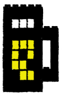

Regional RubyKaigi
at Shibuya First Place Bldg.8F VOYAGE GROUP, Inc.
Shibuya-ku, Tokyo, Japan
Aug. 29th

Kiin to hieta are
The Premium Malt's
LT
の募集は終了しました
一般参加はこちら
and (TBA)
Feel free to contact the team via email to tokyurubykaigi_at_googlegroups.com
Past Kaigis
tokyu08
tokyu07
tokyu06
tokyu05
tokyu04
tokyu03
tokyu02
tokyu01